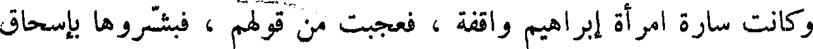
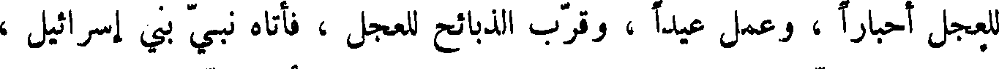
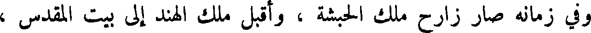
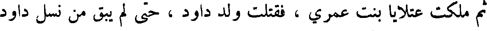
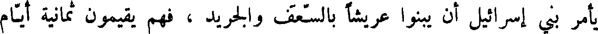

File: 000800.gt.txt (if the image is defective, simply delete all Arabic text and the line will be excluded)

شقرى وشقروني يحكمان بالجور والظلم والعدوان .
File: 000801.gt.txt (if the image is defective, simply delete all Arabic text and the line will be excluded)

ولما كثر عمل قوم لوط وجورهم بعث الله ، عز وجل ، ملائكة لهلاكهم ،
File: 000802.gt.txt (if the image is defective, simply delete all Arabic text and the line will be excluded)

فنزلوا بإبراهيم ، وكان يضيف الأضياف ، ويعمل القرى ، فلما نزلوا به
File: 000803.gt.txt (if the image is defective, simply delete all Arabic text and the line will be excluded)

قرب إليهم عجلا مشويا ، فلما رآهم لا يأكلون نكرهم ، فعرفوه بأنفسهم ،
File: 000804.gt.txt (if the image is defective, simply delete all Arabic text and the line will be excluded)

وقالوا : أنا رسل ربك لهلاك أهل هذه القرية ، يعنون سدوم القرية التي كان فيها
File: 000805.gt.txt (if the image is defective, simply delete all Arabic text and the line will be excluded)

قوم لوط ، فقال لهم إبراهيم : إن فيها لوطا ، قالوا : نحن اعلم بمن فيها،
File: 000806.gt.txt (if the image is defective, simply delete all Arabic text and the line will be excluded)

لننجينه وأهله ، إلا امرأته .
File: 000807.gt.txt (if the image is defective, simply delete all Arabic text and the line will be excluded)

وكانت سارة امرأة إبراهيم واقفة ، فعجبت من قولهم ، فبشروها بإسحاق
File: 000808.gt.txt (if the image is defective, simply delete all Arabic text and the line will be excluded)

فقالت : أألد وأنا عجوز ، وهذا بعلي شيخ كبير ؟ وكان إبراهيم ابن مائة سنة ،
File: 000809.gt.txt (if the image is defective, simply delete all Arabic text and the line will be excluded)

وهي بنت تسعين ، فلما أتوا إلى لوط ، ورأتهم امرأته دخنت لقومها ، فجاءوا
File: 000810.gt.txt (if the image is defective, simply delete all Arabic text and the line will be excluded)

إلى لوط ، فقالوا : ادفع ألينا اضيافك ! فقال : لا تفضحون في ضيفي ! فلما
File: 000811.gt.txt (if the image is defective, simply delete all Arabic text and the line will be excluded)

اكثروا صدهم جبريل ، فأعماهم ، فقالوا له : إنا مهلكوهم . قال : فمتى ؟
File: 000812.gt.txt (if the image is defective, simply delete all Arabic text and the line will be excluded)

قالوا : الصبح . قال : توخرونهم إلى الصبح ؟ قال له جبريل : أليس الصبح
File: 000813.gt.txt (if the image is defective, simply delete all Arabic text and the line will be excluded)

بقريب ؟ فلما كان السحر قال له جبريل : اخرج ، ثم قلبها عليهم . ويقال
File: 000814.gt.txt (if the image is defective, simply delete all Arabic text and the line will be excluded)

نزلت عليهم نار ، فلم ينج منهم أحد ، وكانت امرأة لوط فيهم فمسخت ملحا ،
File: 000815.gt.txt (if the image is defective, simply delete all Arabic text and the line will be excluded)

فما بقي منهم مخبر .
File: 000816.gt.txt (if the image is defective, simply delete all Arabic text and the line will be excluded)

ووهب الله لإبراهيم إسحاق بن سارة ، فعجب الناس من ذلك ، وقالوا :
File: 000817.gt.txt (if the image is defective, simply delete all Arabic text and the line will be excluded)

شيخ ابن مائة سنة ، وعجوز بنت تسعين سنة ! فخرج إسحاق أشبه شيء بإبراهيم.
File: 000818.gt.txt (if the image is defective, simply delete all Arabic text and the line will be excluded)

وكان إبراهيم يزور إسماعيل وأمه في كل وقت . وبلغ إسماعيل حتى صار
File: 000819.gt.txt (if the image is defective, simply delete all Arabic text and the line will be excluded)

رجلا ، ثم تزوج امرأة من جرهم ، فزاره إبراهيم مرة ، فلم يلقه ، وكانت
File: 000820.gt.txt (if the image is defective, simply delete all Arabic text and the line will be excluded)
أمه قد ماتت ، فكلم امرأته فلم يرض عقلها ، وسألها عن إسماعيل ، فقالت :
File: 000821.gt.txt (if the image is defective, simply delete all Arabic text and the line will be excluded)

في الرعي ! فقال : إذا جاء فقولي له غير عتبة بابك ! فلما انصرف إسماعيل من
File: 000822.gt.txt (if the image is defective, simply delete all Arabic text and the line will be excluded)

رعيه قالت له آمراته : قد جاء هنا شيخ يسأل عنك . فقال إسماعيل : فما قال
File: 000823.gt.txt (if the image is defective, simply delete all Arabic text and the line will be excluded)

لك ؟ قالت قال لي : قولي له غير عتبة بابك . قال : أنت خلية ! فطلقها ،
File: 000824.gt.txt (if the image is defective, simply delete all Arabic text and the line will be excluded)

عجلا من ذهب ، وقال : هذه آلهتكم التي أصعدتكم من ارض مصر ، واتخذ
File: 000825.gt.txt (if the image is defective, simply delete all Arabic text and the line will be excluded)

للعجل أحبارا ، وعمل عيدا ، وقرب الذبائح للعجل ، فأتاه نبي بني إسرائيل ،
File: 000826.gt.txt (if the image is defective, simply delete all Arabic text and the line will be excluded)

فوعظه ، فمد يده إليه فيبست ، فقال له : ادع الله أن يرد يدي ! فدعا له
File: 000827.gt.txt (if the image is defective, simply delete all Arabic text and the line will be excluded)

النبي ، فرجعت يد يوربعم ، وأقام يوربعم على طريقه لم يرجع عنها ، واهلك
File: 000828.gt.txt (if the image is defective, simply delete all Arabic text and the line will be excluded)

الله يوربعم ، وكل من كان معه ، وقتله ، ودمر عليه ، وكان ملكه عشرين سنة .
File: 000829.gt.txt (if the image is defective, simply delete all Arabic text and the line will be excluded)
ثم ملك ابيام بن رحبعم ، فسلك سبيل أبيه ، واظهر الفواحش ، وارتكب
File: 000830.gt.txt (if the image is defective, simply delete all Arabic text and the line will be excluded)

القبيح ، فتبر الله عمره ، وكان ملكه ثلاث سنين ؛ ثم ملك اسا ، فاظهر العمل
File: 000831.gt.txt (if the image is defective, simply delete all Arabic text and the line will be excluded)

بطاعة الله تعالى ، ومنع الزنا ، وعاقب عليه وعلى الريب ، واخرج من كان
File: 000832.gt.txt (if the image is defective, simply delete all Arabic text and the line will be excluded)

يعبد الأصنام من مملكته ، حتى طرد أمه لما بلغه أنها تعبد الأصنام .
File: 000833.gt.txt (if the image is defective, simply delete all Arabic text and the line will be excluded)

وفي زمانه صار زارح ملك الحبشة ، واقبل ملك الهند إلى بيت المقدس ،
File: 000834.gt.txt (if the image is defective, simply delete all Arabic text and the line will be excluded)

فبعث الله عذابا ، فأهلك زارح وملك الهند . وكان ملك اسا أربعين سنة ، ويقال
File: 000835.gt.txt (if the image is defective, simply delete all Arabic text and the line will be excluded)

إن بني إسرائيل أوقدوا من خشب أسلحة أصحاب الهند ، لما قتلهم اسا ، سبع
File: 000836.gt.txt (if the image is defective, simply delete all Arabic text and the line will be excluded)

سنين .
File: 000837.gt.txt (if the image is defective, simply delete all Arabic text and the line will be excluded)

ثم ملك بعده ابنه يهوشافط ، فسلك سبيل أبيه ، وكان ناسكا صديقا ،
File: 000838.gt.txt (if the image is defective, simply delete all Arabic text and the line will be excluded)

فملك العشرة الأسباط ، وكان مرضيا في جميع بني إسرائيل ، وكان ملكه
File: 000839.gt.txt (if the image is defective, simply delete all Arabic text and the line will be excluded)

خمسا وعشرين سنة .
File: 000840.gt.txt (if the image is defective, simply delete all Arabic text and the line will be excluded)

ثم ملك بعده يورام ابنه ، فكفر ، ورجع قومه إلى عبادة الأصنام ، وتزوج
File: 000841.gt.txt (if the image is defective, simply delete all Arabic text and the line will be excluded)
امرأةأطغته وأضلته ، وكان ملكه أربعين سنة .
File: 000842.gt.txt (if the image is defective, simply delete all Arabic text and the line will be excluded)

ثم ملك احزيا ، بعد أبيه ، فسلك سبيله ، وكان العشرة الأسباط قد اعتزلت،
File: 000843.gt.txt (if the image is defective, simply delete all Arabic text and the line will be excluded)

وملكت منهم ملكا يقال له يهو ، فحارب احزيا ، حتى قتل من قومه مقتلة
File: 000844.gt.txt (if the image is defective, simply delete all Arabic text and the line will be excluded)
عظيمة ، ثم سلط الله عليهم ملك سورية ، ففعل بهم مثل ذلك ؛ وكان ملك
File: 000845.gt.txt (if the image is defective, simply delete all Arabic text and the line will be excluded)

احزيا سنة واحدة .
File: 000846.gt.txt (if the image is defective, simply delete all Arabic text and the line will be excluded)

ثم ملكت عقلايا بنت عمري ، فقتلت ولد داود ، حتى لم يبق من نسل داود
File: 000847.gt.txt (if the image is defective, simply delete all Arabic text and the line will be excluded)

أحدا إلا غلام يقال له يواش ، وأخذته امرأة من بني عمه يقال لها يوشبع
File: 000848.gt.txt (if the image is defective, simply delete all Arabic text and the line will be excluded)

يأمر بني إسرائيل أن يبنوا عريشا بالسعف والجريد ، فهم يقيمون ثمانية أيام
File: 000849.gt.txt (if the image is defective, simply delete all Arabic text and the line will be excluded)

يتخذون في كنائسهم ظلالات من السعف والجريد .